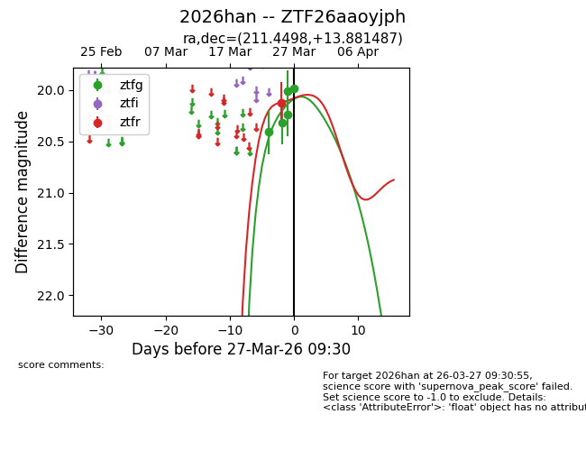
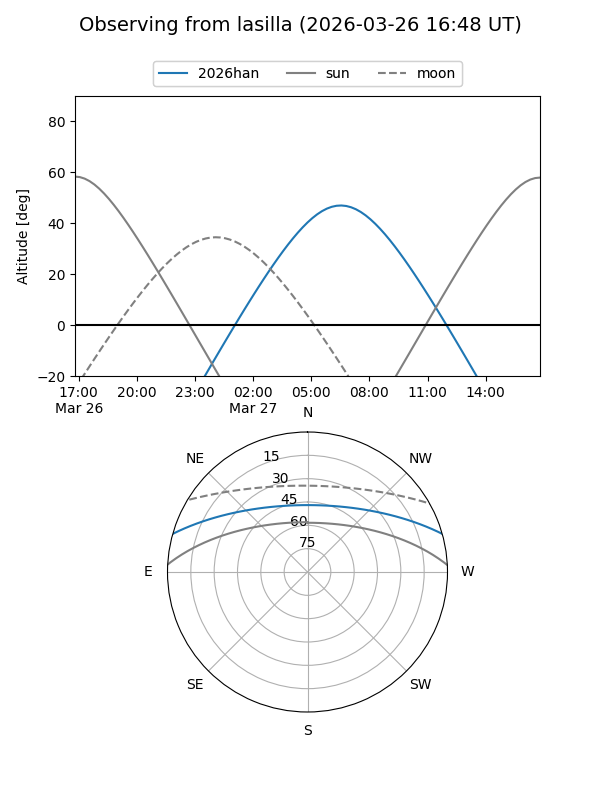
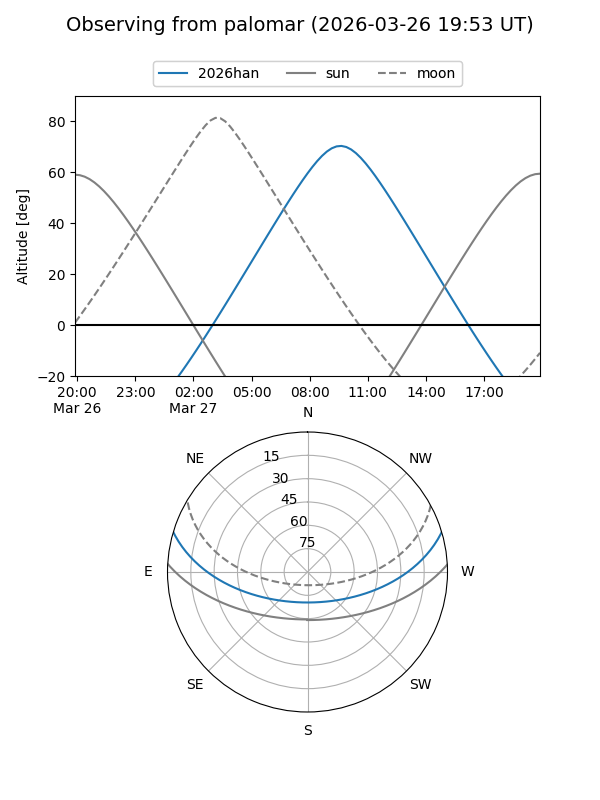
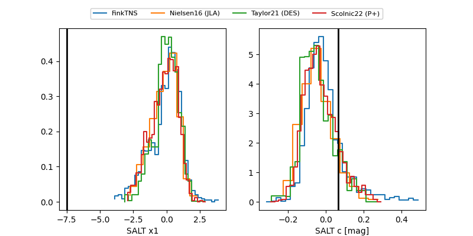

2026han
Target 2026han at 2026-03-27 09:33
Aliases and brokers:
FINK: link
Lasair: link
ALeRCE: link
TNS: link
YSE: link
alt names
ZTF26aaoyjph (ztf,fink_ztf)
2026han (tns,yse)
Coordinates:
equatorial (ra, dec) = 211.4498,+13.88149
equatorial (HMS+DMS) = 14:05:47.95,+13:52:53.35
galactic (l, b) = (359.2775,+68.17302)
Flags:
Photometry:
last ztfg=19.98, ztfr=20.12
5 ztfg, 1 ztfr detections
Lightcurve

Visibility


Additional plots
